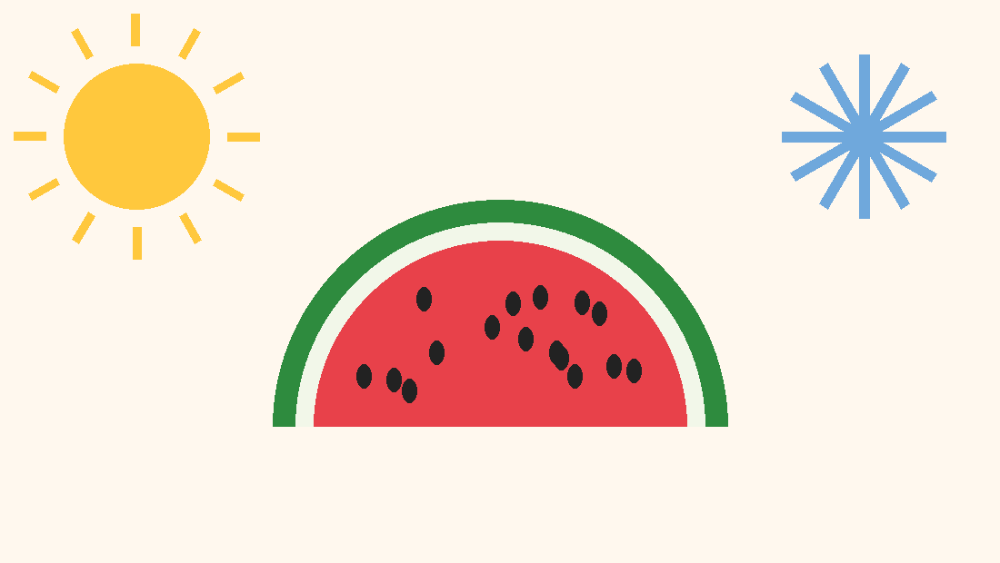

중학교 사회 · 시장 경제
수요와 공급, 시장 가격의 결정
같은 크기의 수박인데
여름에는 한 통에 15,000원,
겨울에는 35,000원이다.
수박 값을 정하는 사람은
누구일까?
값은 한 사람이 정하지 않는다.
사려는 사람과 팔려는 사람이
만나서 정한다.

수요 법칙가격이 오르면 수요량이 줄어들고
가격이 내리면 수요량이 늘어난다.
가격과 수요량은 반대 방향으로 움직인다.
공급 법칙가격이 오르면 공급량이 늘어나고
가격이 내리면 공급량이 줄어든다.
가격과 공급량은 같은 방향으로 움직인다.
어느 마을 떡볶이 시장의 하루 거래를
나타낸 가상 자료이다(예시).
| 가격(원) | 수요량 (인분) | 공급량 (인분) |
|---|---|---|
| 2,000 | 500 | 100 |
| 2,500 | 400 | 200 |
| 3,000 | 300 | 300 |
| 3,500 | 200 | 400 |
| 4,000 | 100 | 500 |
가격 시작
수요 곡선은 오른쪽 아래로,
공급 곡선은 오른쪽 위로 향한다.
가격 시작
표 사이 가격은 두 값을 직선으로 이은 모형이다.
수요량(사려는 양)
공급량(팔려는 양)
결국 수요량 = 공급량이 되는 3,000원에서
가격이 정해진다(균형 가격).
6쪽의 표에서 떡볶이 1인분 가격이 2,500원일 때
나타나는 현상으로 옳은 것은?
초과 수요일 때는 사려는 사람끼리,
초과 공급일 때는 팔려는 사람끼리 경쟁해서 가격이 움직인다.
| 가격(원) | 2,000 | 2,500 | 3,000 | 3,500 | 4,000 |
|---|---|---|---|---|---|
| 수요량 | |||||
| 공급량 |
회색 점선은 처음 곡선이다.
변화 폭 100인분은 설명을 위한 모형이다.
| 수요를 변하게 하는 요인 | 공급을 변하게 하는 요인 |
|---|---|
| 소비자의 소득 | 생산 요소의 가격 (재료비, 임금) |
| 소비자의 선호 | 생산 기술 |
| 관련 상품(대체재·보완재)의 가격 | 공급자의 수 |
| 인구 (소비자의 수) | 기후 (농산물) |
가격이 바뀌면 수요량·공급량이 움직인다.
가격 말고 다른 요인이 바뀌면 수요·공급 자체가 바뀐다.
다음 사례가 떡볶이의 수요를 변하게 하는지,
공급을 변하게 하는지 분류해 보자.